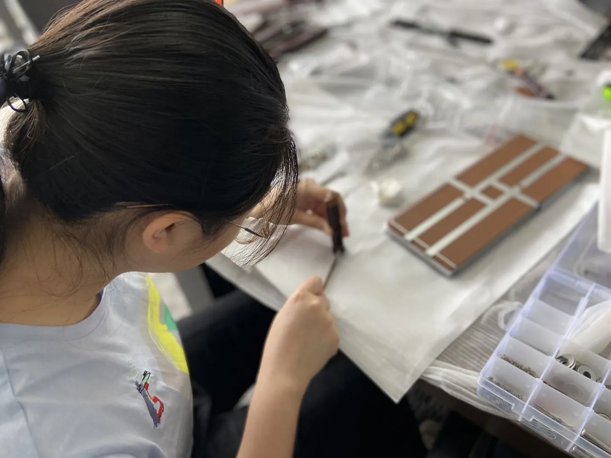
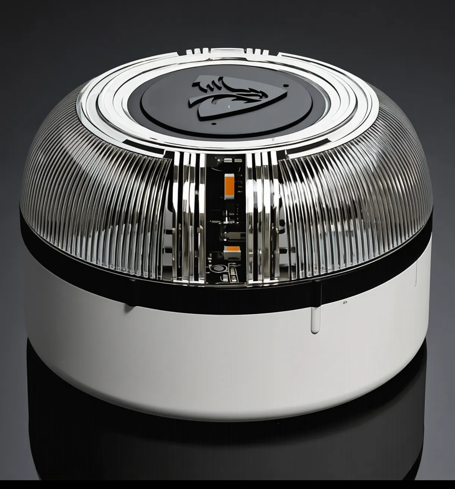
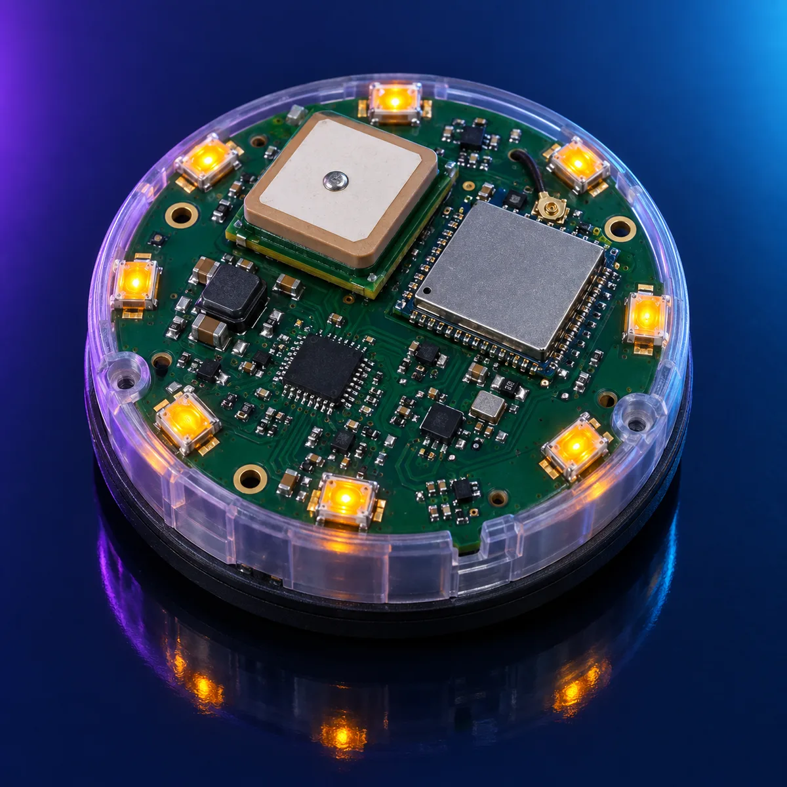
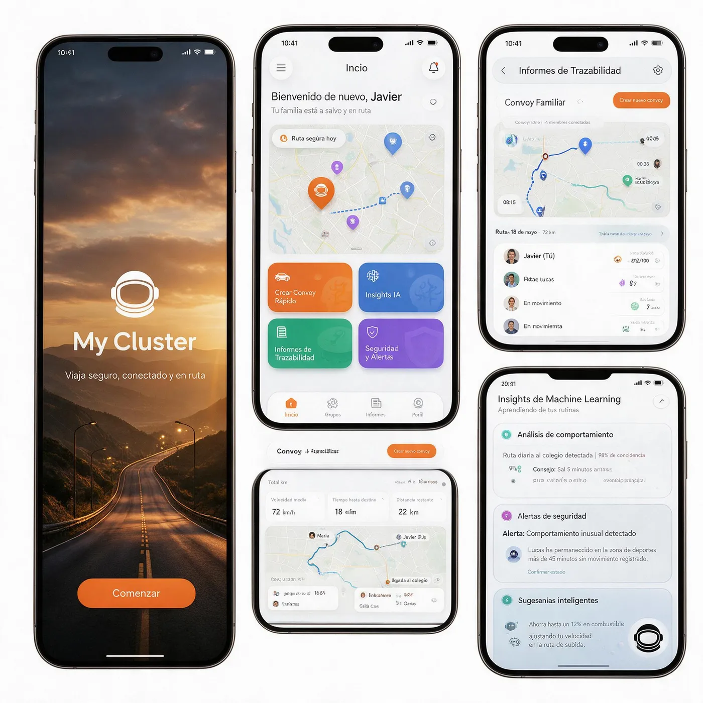

Certificada · Disponible
Instaflash G001
Cúpula transparente, luz 360° y encendido inmediato al retirar el seguro.
Ver ficha técnicaGrupo Instaflash · Momentum Systems
Dando forma a la nueva movilidad.
Quiénes somos
Grupo Instaflash reúne ingeniería de radio en España, ingeniería fotométrica y producción propia en Asia, y una sola autoridad técnica: Momentum Systems S.L., fabricante legal de cada Instaflash V16 que llega al mercado.
Combinamos certificación independiente, control de producción por lotes y conectividad incluida durante toda la vida útil del dispositivo. Así convertimos una obligación legal en una garantía para conductores, flotas y aseguradoras.
Conocer el grupo
Instaflash V16 IoT
Cúpula transparente, luz 360° y encendido inmediato al retirar el seguro.
Ver ficha técnica
Pulsador superior, ocho LED de doble destello y conectividad NB-IoT multibanda.
Ver ficha técnicaCómo funciona
Desde la ventanilla, sin salir del vehículo.
Luz intermitente visible en 360°.
Envía su posición a DGT 3.0 de forma anónima cada 100 segundos.
La DGT muestra la incidencia en paneles, navegadores y vehículos conectados.

Cada activación llega a la plataforma de vehículo conectado de la DGT y, desde allí, a los navegadores y a los paneles de la vía. Los demás conductores conocen la incidencia antes de verla.
Saber másFlotas
Calidad y cumplimiento
Proveedores aprobados, control en tres etapas, número de serie y conectividad registrados por lote, y documentación técnica conservada durante al menos 13 años.
Cómo lo hacemos
My Cluster
PreproducciónMovilidad y seguridad para personas, familias y empresas. Un servicio propio, independiente de la baliza V16.
Conocer My Cluster
«Una baliza se compra una vez y se usa en el peor momento. Por eso certificamos cada unidad, fabricamos bajo nuestro control y respondemos de ella durante toda su vida útil.»
Juan José Durán López · Consejero delegado, Momentum Systems
Contacto
Documentación técnica en español a disposición de la DGT y de los servicios técnicos.
EscribirCalle Aviador Zorita, 13, planta 2, puerta 05
28020 Madrid
Documentación técnica
Certificados, informes de ensayo y fichas completas de cada modelo quedan a tu disposición en el portal de clientes. El alta es inmediata y sin coste.